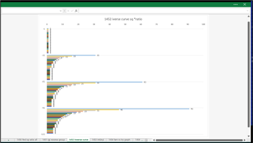
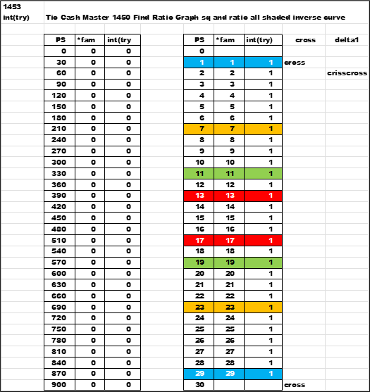
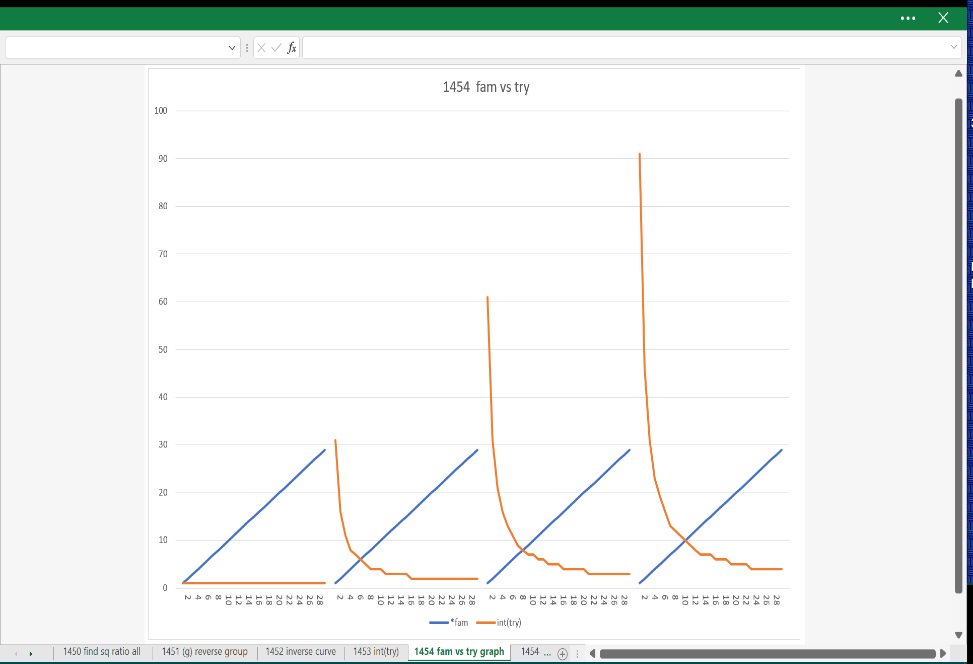
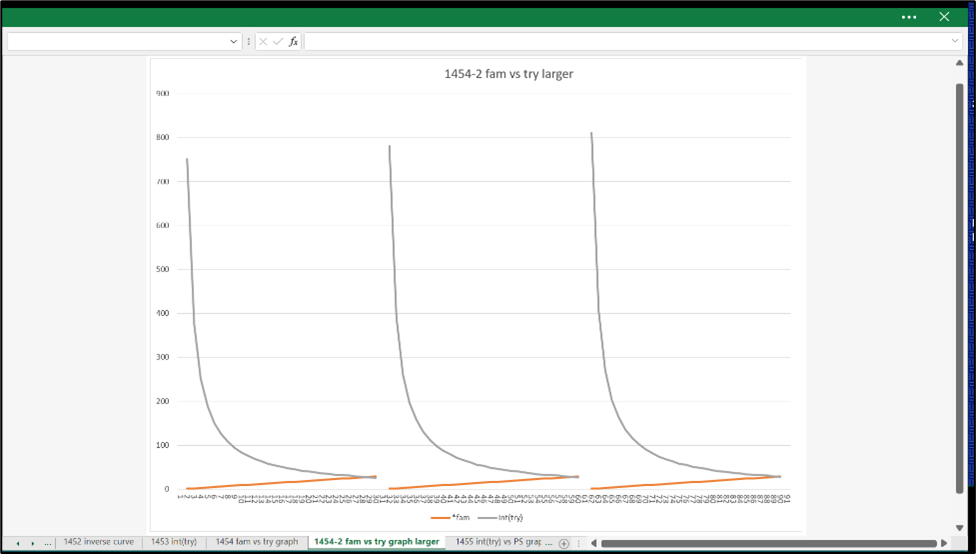
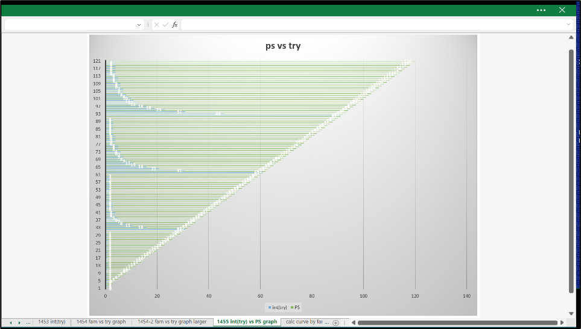
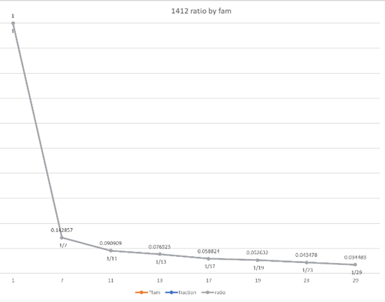
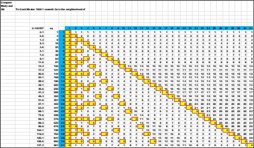

While all the data is present ; here are some charts with the familiar data of the mod function in the yellow cells.
For the first group (g) = 0 ; the values of 0 to 29 all numbers must be tested. The shaded cells
are 1/7th the PS squared.
In the next chart the group (g) = 1 , the shaded cells show the numbers of 1/7th of the square of PS.
It appears to have a repeating pattern. As does the next chart.
Different view of the first four groups (g). It is a similar pattern for each group.
But there is a point of failure ; a data exception of one row. At 77 ( 7 x 11 ) the curve is
inside the yellow MOD() cell. Otherwise , it appears as a limit to test for primes.

Below are some additional charts and graphs to look for a limit using group (g) and square and 1/7th.
Different view same data in an excel graph.
Another dataset.
Another graph.
Another graph value higher up - larger values.
This is the PS vs the "try"
Looking at the square did not pan out , but lead to the next chapter. There is something here.
It is pretty arts and charts ; but the one data exception disqualifies the formulas from working consistently.
The interesting point of all the above graphs in this chapter , the view is the same as the diminishing ratio from the percentages section.
 next